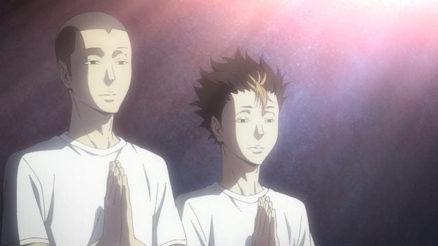
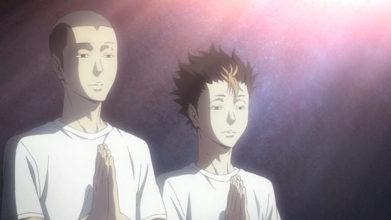

I. What It's All About
The surprising fact is that, i don't think i really have a stable hobby, it may change times after times as i like to tryout new things. Whenever something sparks my interest, i will have the urge to do it. For example, if i saw a fascinating book, manga, or movie, i'm gonna stick to it for a while.
This kind of hobby can get me everywhere, everytime the movie or something goes wrong, like the plot goes bad or just the movie isn't available, all i have to do is look for other things to do, like search for manga of the same genre. In addition, if i'm sick and tired of staring at the screen, i can stand up and watch the clouds flying by.
I'm kinda introvert so my choice of activities usually wrapped around my own room, but this hobby did get me around the city looking for the books i'm currently interested in, and once i got my hands on it, it gets even more thrilling as i can feel the paper and the smell of the book. Has it not been for this hobby, i won't be able to see the importance of every little things
II. The photo
I lost the photo of my first original japanese mangas i got from a local bookstore, so here's chibi Childe waving his cute little arms:
 Aaaandd another chibi Doraemon when he received (or receive cause this happens somewhere in the future) a happy birthday letter from nobita-kun~:
Aaaandd another chibi Doraemon when he received (or receive cause this happens somewhere in the future) a happy birthday letter from nobita-kun~:
 Last (but of course not least) a portrait of me praying for the pass of all subjects restored and colorized:

Last (but of course not least) a portrait of me praying for the pass of all subjects restored and colorized:

III. The links
This is a link to one of my favorite travel vblogger youtube Halala:Another youtube blog by John Daub
And another one
And this one youtube channel used to dedicated for my favorite game Elsword: